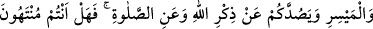

İÇKİ, KUMAR, PUTLAR
VE FAL OKLARI
90. Ey îman edenler! Şarap, kumar, dikili taşlar (putlar), fal okları şeytan işi birer
pisliktir; bunlardan uzak durun ki kurtuluşa eresiniz.
91. Şeytan içki ve kumar yoluyla ancak aranıza düşmanlık ve kin sokmak, sizi
Allah’ı anmaktan ve namazdan alıkoymak ister. Artık (bunlardan) vazgeçtiniz değil
mi?
92. Allah’a itâat edin, Rasûl’e de itâat edin ve (kötülüklerden) sakının. Eğer
(itâatten) yüz çevirirseniz bilin ki Rasûlümüz’e düşen apaçık bir tebliğden
ibârettir.
93. Îman edip de salih amel işleyenlere, hakkıyle sakındıkları, îman ettikleri ve
sâlih ameller işledikleri, sonra yine hakkıyle sakındıkları ve îman ettikleri, sonra da
hakkıyle sakındıkları ve yaptıklarını ihsan üzere yaptıkları takdirde (haram
kılınmadan önce) tattıklarından dolayı günah yoktur. Allah iyi ve güzel yapanları
sever.
İçki yasağı tedricen konulmuş bir yasaktır. Bu âyet içki ile ilgili nâzil olan dört âyetin
sonuncusudur. Bu konu tafsilatıyla Bakara sûresinde geçmiştir. (219. âyetin tefsirine
müracat edilebilir.)
“Ey îman edenler!” Sarhoşluk veren her şey “şarap”; tavla, satranç, ondört diye
bilinen oyun, zar vb. bütün çeşitleriyle “kumar”; ibadet için yapılan “dikili taşlar”
yani putlar; bazısının üzerinde “Rabbim bana emretti.” bazısının üzerinde “Rabbim beni
nehyetti” yazan ve başlanılacak bir işin güya hayır mı, şer mi olduğunu gösteren “fal